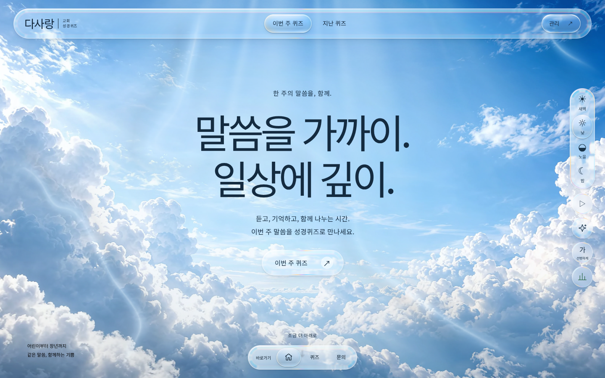
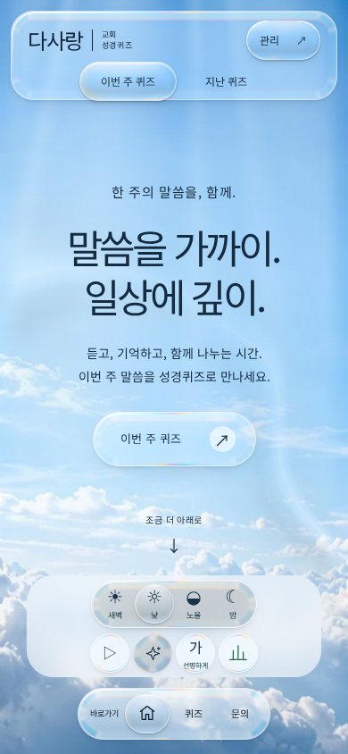
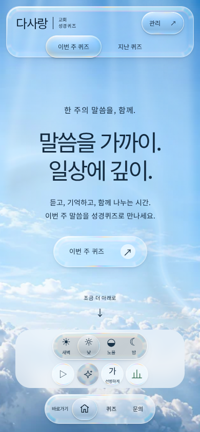
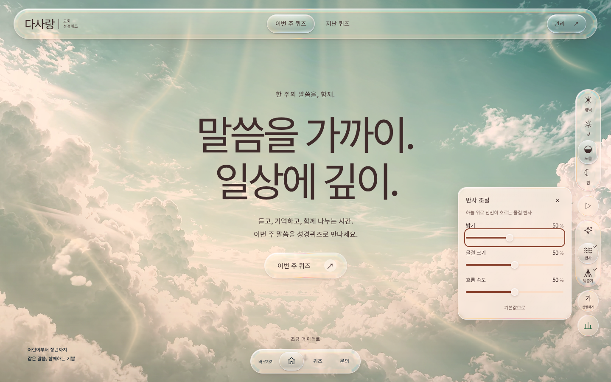
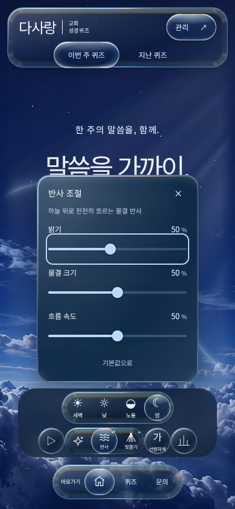

첫 화면의 모습은 그대로, 준비는 가볍게.
기존 영상·물결 반사·빛줄기·투명 유리의 기본 모양을 유지했습니다. 화면 밖 유리 지도와 구름, 아직 필요 없는 풀이 코드는 필요한 시점에 준비합니다. 반사에도 밝기·물결 크기·흐름 속도 조절판을 추가했습니다.
동일 조건의 전후 수치
| 항목 | 개선 전 | 개선 후 | 변화 |
|---|---|---|---|
| 주요 내용 표시 (LCP) | 2,408 ms | 1,824 ms | 24% 감소 |
| 첫 영상 프레임 확인 | 5,390 ms | 3,827 ms | 29% 감소 |
| 최초 5초의 긴 작업 대기 | 1,893 ms | 730 ms | 61% 감소 |
| 12초 동안 받은 전체 전송량 · 영상 포함 | 5570 KB | 5121 KB | 8% 감소 |
| 요청 완료 자산 · 영상 제외 | 1082 KB | 632 KB | 42% 감소 |
| 첫 화면 구름 이미지 요청 | 5 건 | 0 건 | 100% 감소 |
390×844 · 낮 · 영상/반사/빛줄기 켬 · 매번 새 브라우저와 빈 캐시 · 10Mbps/40ms · CPU 4배 느리게 · Chromium 소프트웨어 GPU. 전후 순서를 바꿔 각 3회 측정한 중앙값입니다. 영상은 첫 requestVideoFrameCallback을 확인한 시각이며 실제 모니터의 출력 시각과는 다를 수 있습니다. 긴 작업 대기는 최초 5초 안에서 한 작업의 50ms를 넘는 부분을 합산했으며 Lighthouse TBT와는 다른 구간입니다. 원본 영상의 파일과 해상도는 바꾸지 않았습니다. 이 수치는 실제 Windows 기기의 속도 보장이 아닙니다.
별도로 실행한 Lighthouse 모바일 검사는 성능 65점·접근성 100점, LCP 4.1초·TBT 604ms·레이아웃 밀림 0.00011682094461071798입니다. 위 전후 측정과 다른 조건이므로 서로의 수치를 직접 비교하지 않습니다. 영상 전송과 첫 실행 비용은 남아 있으며, 기존 ‘선명하게’ 버튼의 화면 문구와 접근성 이름 차이도 진단에 남습니다.
같은 장면의 실제 화면
아래는 두 배포용 빌드의 실제 브라우저 캡처입니다. 모양을 비교하기 위해 같은 첫 장면에서 멈췄습니다. 이때 기본 반사·빛줄기와 헤더 굴절 지도의 픽셀도 전후 일치했습니다. 위 속도 측정은 별도로 영상을 재생한 상태입니다. 이미지를 누르면 원본 크기로 열립니다.



모바일에서도 같은 재질




반사 버튼 옆에서 조절
별 아이콘을 펼친 뒤 반사를 누르세요. 기본값은 세 항목 모두 50%이며 기존 모양과 같습니다. 흐름 속도 0%는 물결의 흐름을 멈춥니다. 닫아도 효과는 유지되고, 열린 반사 버튼을 다시 누르면 꺼집니다. 빛줄기와 값은 각각 저장됩니다.




실제 localhost:5173에서 네 시간대×1440/390/320px, 영상 재생·제어판 범위·초점 복귀·아래 유리 준비·잔디·푸터를 확인했습니다. 사용자 Windows 화면의 표시 여부는 HTTP 이미지 응답 검사와 구별합니다.